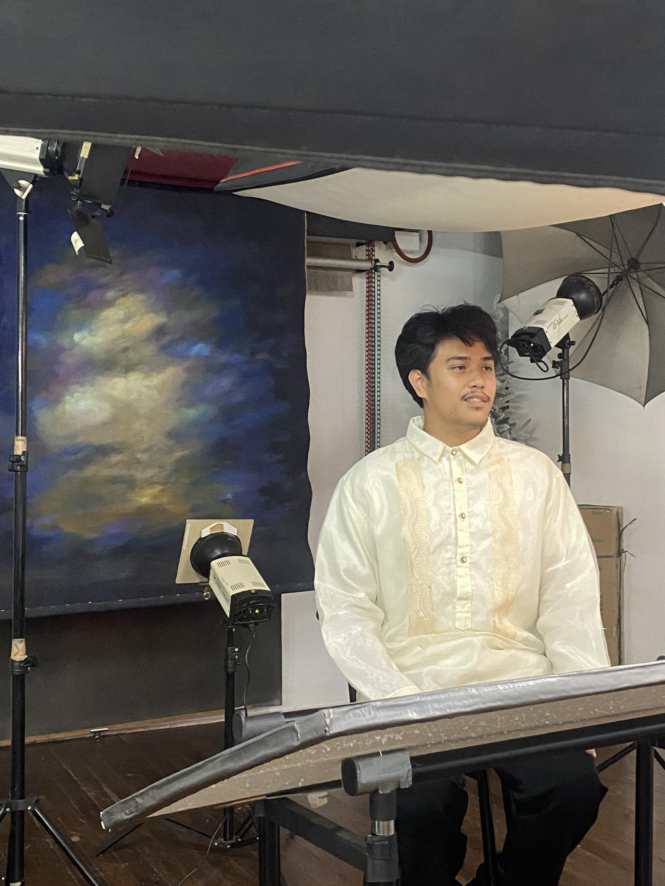

DAVE WARREN FLORES

Personal Background
My name is Dave Warren Flores, I’m 20 years old and currently studying at the University of Cebu (UC).
I graduated from Zapatera National High School, where I completed the HUMSS strand (Humanities and Social Sciences). I live in Lorega San Miguel, Cebu City, and have two siblings—a 17-year-old brother and an 11-year-old sister.
I’m a passionate basketball player and an avid online gamer who enjoys competitive games like Dota. These activities have taught me the value of teamwork, strategic thinking, perseverance, and quick decision-making, skills that I apply both on the court and in my academic life.
I chose BSIT (Bachelor of Science in Information Technology) because I have a strong passion for technology and a deep curiosity about how things work behind the scenes in software and hardware.
I am driven to gain comprehensive knowledge in programming, networking, and system analysis, which will enable me to develop innovative solutions to real-world problems.
My goal is to contribute meaningfully to the rapidly evolving IT industry while preparing myself for diverse career opportunities in software development, cybersecurity, and IT management.
Beyond my studies, I enjoy exploring emerging technologies such as artificial intelligence, cloud computing, and cybersecurity trends. I am eager to participate in internships, projects, and collaborations that will help me gain practical experience and enhance my problem-solving skills.
I believe that continuous learning and adaptability are crucial to succeed in the fast-paced tech world.
In the future, I aim to become a well-rounded IT professional who not only masters technical skills but also demonstrates leadership, ethical responsibility, and a commitment to using technology to improve communities and businesses.
I am excited about the endless possibilities that a career in IT offers and look forward to making a positive impact in this field.
HOME